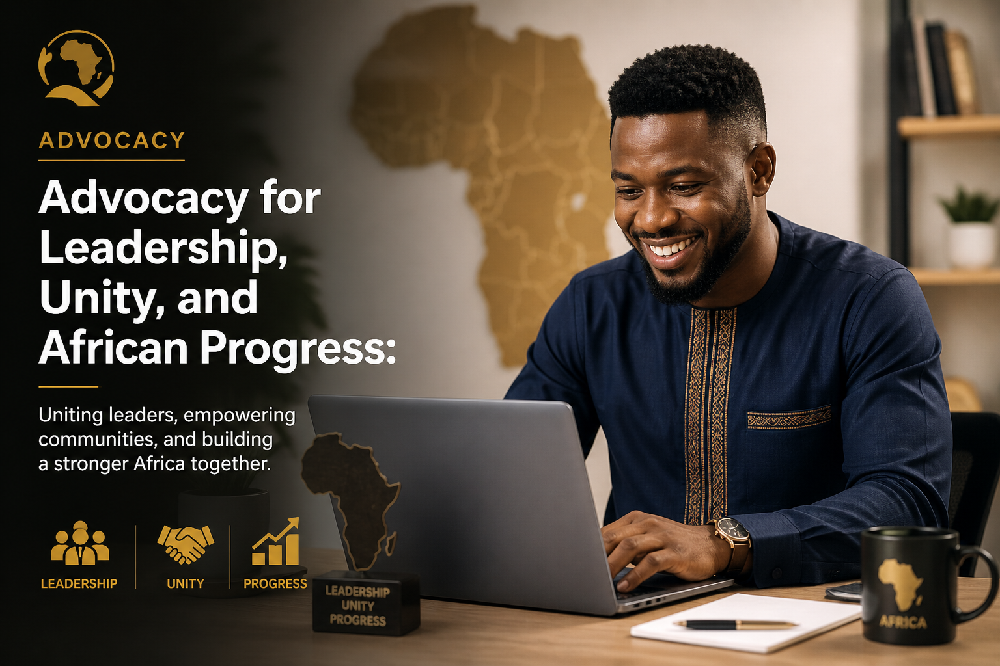

Advocacy
Advocacy for Leadership, Unity, and African Progress
We amplify voices, strengthen communities, and promote principled leadership that advances service, opportunity, and progress across Africa.
Partner in Advocacy
Advocacy
We amplify voices, strengthen communities, and promote principled leadership that advances service, opportunity, and progress across Africa.
Partner in Advocacy
Focus Areas
These priorities give the platform a clear public voice and a professional framework for future partnerships, stories, campaigns, and community initiatives.
Equipping young people with confidence, character, guidance, and the mindset to lead with purpose.
Promoting learning, digital literacy, and practical skills that expand opportunity across communities.
Encouraging public trust, transparency, responsible conduct, and leadership that serves people first.
Supporting local ideas, partnerships, and service initiatives that improve everyday life.
Strengthening dialogue, mutual respect, and collaboration across generations, backgrounds, and regions.
Celebrating African creativity, enterprise, technology, and development pathways that move society forward.
Take Action
Partner with a platform amplifying youth empowerment, civic responsibility, and constructive African progress.